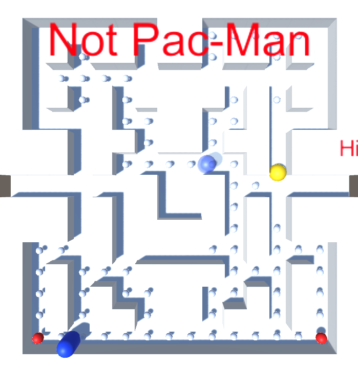
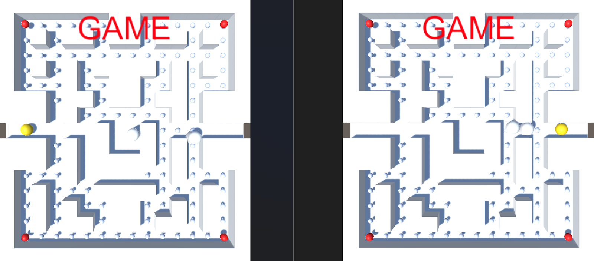

Mellow Yellow Fellow
A Unity sequel prototype inspired by Pac-Man, focused on ghost behavior, teleport tunnels, score systems, level reset flow, and readable arcade gameplay.

Overview
Mellow Yellow Fellow is a Unity prototype developed as a sequel-style extension of a provided baseline arcade game. The project reworks a Pac-Man-inspired structure into a more complete playable experience by adding tunnel teleportation, ghost recovery behavior, life-based resets, level progression, user interface systems, and persistent high-score handling. :contentReference[oaicite:1]{index=1}
My Role
I designed and implemented the new gameplay systems and project improvements on top of the provided Unity prototype. My work focused on ghost logic, player state flow, UI visibility, level resetting, score persistence, and general refinement of the game’s arcade loop. :contentReference[oaicite:2]{index=2}
Core Features
- Tunnel Teleportation: The Fellow and ghosts can move through side tunnels to travel from one side of the maze to the other.
- Ghost Recovery: When ghosts are eaten during a power-up state, they return to their home area before rejoining the game.
- Lives System: The player has multiple lives, with the Fellow and ghosts resetting to their starting positions after being caught.
- Level Reset & Progression: Clearing all pellets resets the board and starts a new level while preserving the arcade-style score loop.
- User Interface: The game displays current score, high score, level, and life count during play.
- Saved High Scores: Scores are written to file and reloaded later for persistent comparison across sessions.
Ghost AI & Behaviour
The ghost system was one of the most important parts of the project. Ghosts already used line-of-sight logic through raycasting to detect and chase the Fellow when sight was not obstructed. I expanded that behavior by supporting frightened/eaten state logic and a return-to-home “rebirth” flow after being consumed during a power-up. I also experimented with visual state changes by making eaten ghosts effectively invisible through a repurposed transparent material. :contentReference[oaicite:3]{index=3}
One limitation noted in the report is that I did not implement distinct personalities for multiple ghosts, even though that would have been a natural extension of the design. The ghosts instead shared the same broad behavior structure. :contentReference[oaicite:4]{index=4}
Player Progression & Game Flow
A major part of the project was making the game feel closer to a classic arcade loop. If the Fellow touches a ghost without an active power-up, the board state resets for character positions and the player loses a life, while consumed pellets and power-ups remain gone unless the level is reset. If all pellets are cleared, the level refreshes and the game continues into the next round rather than ending permanently, preserving the score-chasing structure associated with Pac-Man-style design. :contentReference[oaicite:5]{index=5}
User Interface & Score Systems
I implemented visible UI support so the player can always track score, remaining lives, level, and high-score progress. The project also includes a saved scoreboard system backed by a text file, with a default player identity and score replacement logic when a new high score is achieved. The scoreboard can be displayed during the game by pressing Enter, and the entries are sorted in descending score order. :contentReference[oaicite:6]{index=6}
Technical Focus
The project is a good example of extending a provided Unity baseline into a more complete game loop through prefab use, state-driven logic, file-backed persistence, and AI adjustment. It also reflects early Unity-focused development work: using prefabs for pellets, power-ups, and ghost setup; handling event-driven collisions; and integrating player-visible systems without rebuilding the entire project architecture. :contentReference[oaicite:7]{index=7}
Design Challenges
The main challenge was turning a tutorial-style prototype into a fuller game loop without destabilizing the existing project. The report specifically notes issues such as unpredictable ghost teleportation, incomplete audio work, the game beginning before the intended start interaction, and the scoreboard only fully updating after reload. These issues are useful evidence of the kinds of debugging and system-linking problems that appear early in Unity project development. :contentReference[oaicite:8]{index=8}
Outcome
Mellow Yellow Fellow demonstrates a practical Unity prototype built around recognizable arcade principles: chase AI, power-up state changes, level reset flow, persistent scores, and player-visible feedback. It works well as an early systems project because it shows both successful feature integration and honest reflection on implementation limits and debugging challenges. :contentReference[oaicite:9]{index=9}
Gameplay Overview

Mellow Yellow Fellow builds on classic maze-navigation gameplay, introducing ghost AI, pathing pressure, and score-driven routing decisions. The project focuses on recreating familiar arcade structure while reinforcing clean system design and responsive controls.